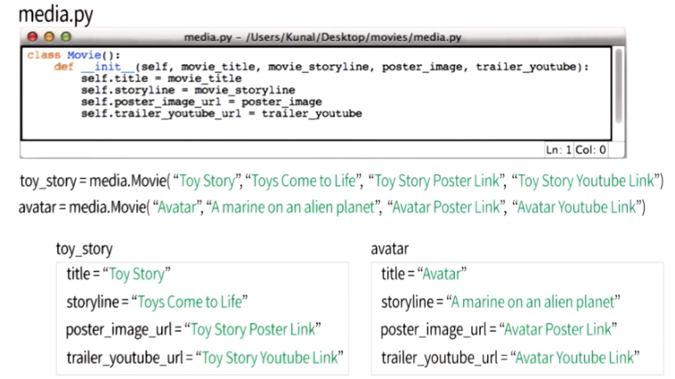

Manuel's Notes
My Notes for Stage 0: The Basics of the Web and HTML
All the Client, Server, Internet Stuff is not new for me because i'm a network guy :-).
<p>Content</p> is an HTML Tag
<p attribute="value">Content</p> is an HTML Tag with an Attribute
Some Tags don't need to be closed. These are Void Tags. Example <img>
There are Inline and Block elements.
Inline Elements are just manipulate the written Text.
Block Elements are build an invisible Box thourgh the Element
<span> is an inline Element and <div> is a block element.
Computers are stupid. Write exactly what the Computer understands. Otherwise the Code will not work
Don't forget to close your Tag </tag>
My Notes for Stage 2: Creating a Structured Document with HTML
HTML and CSS are both "languages"
HTML controls the "structure" of a web page.
CSS controls the "style" of a page (how it looks).
When programmers talk about the DOM they are talking about the tree-like structure of a page.
Structure means, that every HTML Document looks same from ground up. You have the <html> element on top of the page. Then you have the <head> and <body> element as child elements of <html> and so on.
So you have a top element and the structure goes down to one or many child elements. But all begins from the Root element.
All HTML Elemets are Rectangle Boxes
Always use and Texteditor for special puroposes to make your content. For example use one with Syntax Highlighting.
CSS Reference Guide
The CSS Selectors
You could select by element in CSS Selector. Then you have to use this code for Example.
h1 {
background-color : black;
color: white;
}
All h1 Elements would now have the Style as configured
You could also Select by class. Then the Style would applied to all Elements with the attribute of the Class. Class selector starts with a ..
.headline {
background-color : black;
color: white;
}
Now all Elements with the attribute class="headline" would the Style applied.
Include CSS to your Page
Method 1: write CSS in the <head> of your HTML
<head>
<style>
div {
background-color : red;
}
</style>
</head>
Method 2: Link your HTML to a separate CSS file
There you have to specifiy a seperate CSS File in your HTML File header.
If the CSS File is not in the same folder you have to specify the Path to the File.
<head>
<link rel="stylesheet" type="text/css" href="main.css">
</head>
Method 3: Write your style inline with your HTML
You should not do this because you have to do this for every Element again. Your code base will grow very strong. This means repetition of Code.
<div style="background-color: red; color: white">
The Box Model
You have in the Box Model four different Types of Borders. The types are Content, Padding, Border and Margin. All Boxes has seperate properties. You can calcualte the Box Size in pixels (px) or in percents.
If you want to calcualte the Width of the Boxes Padding and Border together, you have to use these CSS Options.
-webkit-box-sizing: border-box;
-moz-box-sizing: border-box;
-ms-box-sizing: border-box;
box-sizing: border-box;
As div elements are Block elements, by default they use the entire width of a page. With the CSS Attribute flex you can Change the Box ordering on the Page. In this Guide is the Flexbox Attribute explained.
Code, Test, Refine
1. Look for natural boxes
2. Look for repeated styles & semantic elements
3. Write your HTML
4. Apply Styles (from BIGGEST to smallest)
5. Fix things
To verfiy HTML Code
To verify CSS Code
My Note for Stage 2: Automate your Page
Stage 2: Udacity cs101: Building a Search Engine
Five Points thinking like a Programmer:
1. Procedural Thinking
2. Abstract Thinking
3. Systems Thinking
4. Technological Empathy
5. Debugging
The Backus-Naur Form

The Backus-Naur From gives a Grammar help for Computer Languages. In the Screenshot you see all Violet Words are Non-Terminal. These Non-Terminals are not finished and you have to go further.
Wikipedia Link
Computer
A Computer is a device that executes a program. He can execute it really fast and without breaks.
Program
A program describes a very precise sequence of steps. Since the computer is just a machine, the program must give the steps in a way that can be executed mechanically. That is, the program can be followed without any thought.
Programming Languages, Interpreter, Python
There are many Programming Languages out there. Python is an interpreted Language. That means the we write the Code in Python syntax and this Code would be interpreted by an Python Interpreter in Computer Code. The Python interpreter reads our programs and executes them by following the rules of the Python language.
Not interpreted Languages must be compiled in Computer Code before they can be executed on the Computer
Grammar
We need an exact Grammar for Computer Languages because the syntax must be exact for the Computer otherwise the code would not be understood.
In natural Languages make sentences that are not complete grammatical but people understand it.
Python Expressions

If you want an Integer expression you only have to use Integer Numbers. If you want your Expression in decimal you need to put a decimal pointer after the Number (for Example 5.9 or 6.7).
Vaiables and Strings
What is a variable?
What does it mean to assigna value to a variable?
What is the difference between what the equals = means in math versus programming. What's the differeence between this: 2 + 2 = 5 and this: my_variable = 5?
A variable is a name refers to a value. In Python, we can use any sequence of letters and numbers and underscores (_) we want to make a variable name, so long as it does not start with a number.
Assign Variables in Python:
Name = Expression
speed_of_light = 299792458
In Math equal Sign means equal, in programming it means assignment. You could see the equal sign as an arrow in Programming.

How to declare Strings in Python

Strings has always to be closed with the same Quotiation Marks (single and double) as started. You can use the other type of marks in the String.
It is importent that the Python interpreter interprets a String only if there are quotation marks. If they not there then the interpretor means there is a number now.
To put two Strings together in Python you have to use the concatenation with + Sign. It is different meaning as it is used on numbers.

String Indexing in Python
When you want to select sub-sequences from a string, it is called indexing. Use the square brackets
[] to specify which part of the string you want to select.

String Sub Sequences in Python
You can select a sub-sequence of a string by designating a starting position and an end position. Python reads the characters positions starting at 0, so that if we consider the string 'udacity' that has 7 characters, there are 6 positions with 'u' being in the 0 position.
Find Strings
The find method is a built in operation, or method, provided by Python, that operates on strings.
The output of find is the position of the string where the specified sub-string is found.

Here some Examples using find method in Python:
pythagoras = 'There is geometry in the humming of the strings, there is music in the spacing of the spheres. '
print pythagoras.find('string')
40
print pythagoras[40:]
strings, there is music in the spacing of the spheres.
print pythagoras.find('T')
0
print pythagoras.find('sphere')
86
print pythagoras[86:]
spheres
print pythagoras.find('algebra')
-1
Input -> Function -> Output
How to Use Functions (Procedures) in Python.
You get a String (s) as Input to the Function. The Interpreter evaluates the String and returns it with the result.
You make Functions with def <function name>.
Functions are made by starting a line of code with the keyword def and then giving a function name followed by the function parameters in parentheses. These parameters will eventually be replaced by actual values when the function is used (called).
In the "body" of the function, we write the code that specifies what to do with the input parameters. For example the following code could be the definition of a function called square:
def square(x):
answer = x * x
return answer
To use a function, we write the name of the function followed by the value(s) we want to give it in parentheses. Like this:
print square(4)
>>>16
If a function has no return statement Python returns the Keyword None.
Use triple quotes """Some multiline Text""" to create mulit-line strings in Python.
First automated Python Page Tags:
def title(title_string)
return '<h4>' + title_string + '</h4>'
def description(description_string):
return '<p>' + description_string + '</p>'
print title('My first Python Title')
print description('My first Python Auto generated Webpage')
My first Python Title
My first Python Auto generated Webpage
If and While
In Equality Comparsion you have many Operators to use. Here some examples:
| < |
value is lower than |
| > |
value is greater than |
| != |
value is not the same than |
| == |
value is the same than |
You have to use double = for this Operation because one = defines a Variable.
If Loops

OR Operator in Python
OR Operator only evaluates what he needs to. After first true in OR Operation he stops to evaluate to further expressions.
Flow Chart about Quiz biggest

While Loops

While Loops always executes the Block while the Test Expression is true. If the Test Expression is false, the while Loop ends. While Loops can keep going forever.
You can also Stop while Loops with the break statement.
You can write every Computerprogram with:
Arithmentic
Comparsions
Procedures
if Statements
Lists and For Loops
Udacity CS101: Building a Search Engine Unit 3: Data

The difference between Lists and Strings is that you can store in a List a sequence of anything. In a String you can only store characters. A List is comma separated in Square Brackets. This looks very similar to Strings but it has another behavior.
Here some Codeexamples for Lists in Python:
print "EXAMPLE 1: Lists can contain strings"
string_list = ['HTML', 'CSS', 'Python']
print string_list
print "EXAMPLE 2: Lists can contain numbers"
number_list = [3.14159, 2.71828, 1.61803]
print number_list
print "EXAMPLE 3: Lists can be 'accessed' and 'sliced' like how we accessed and sliced strings in the previous lessons"
pi = number_list[0]
not_pi = number_list[1:]
print pi
print not_pi
print "EXAMPLE 4: Lists can contain strings AND numbers"
mixed_list = ['Hello!', 42, "Goodbye!"]
print mixed_list
print "Example 5: Lists can even contain other lists"
list_with_lists = [3, 'colors:', ['red', 'green', 'blue'], 'your favorite?']
print list_with_lists
You can also have Nested Lists. That means that you have a List in a List. Here is an Example of Nested Lists:
beatles = [['John', 1940], ['Paul', 1942],
['George', 1943], ['Ringo', 1940]
You can select a List with print beatles[1]. Then you got an output of ['Paul', 1942]. But you can also select an Element in a Nested List with print beatles[1][0]. There you got the Result Paul.
With Mutation you can change a value in a list. In the Example we Change the Value 0 = H with an Y after assignig it to the posiotion 0 in the List. In normal Strings you have to change to complete String with a new one not only one value.
It is possible that two Variables reference to the same list. If you change one (e.g. q) the changes are made on both Variables because both are referencing the same list. This is called Aliasing.

All states are the same until you give the Variable a new state.
With the Method append you can add a value to the End of a List. There would not be created a new list, the append method adds the value to the existing list. If you want to add a list with append you it would be added as one element. That means in the result, you have a List in a List as you see in the Example below.
With Plus Operations you can concatenate two Lists to one list.
With the len Function you can count the Values in the List.

For Loops

With for Loops you can go through lists and evaluate every element in the List. The for Loops iterates as long as you have Elements in the input list. A List in the List is one Element as in the len Function.
Investigating adding and appending to lists.
| + |
When you use the + method, you append one or more values to the List. You can list + [5] and you get a list [1,2,3,4,5]. You can list + [5,6,7,8] and you get a list [1,2,3,4,5,6,7,8]. All these Operations generate a new List (new Object). |
| append |
When you use the append method, you append one single value to the List. When you append more values then one, then you append a List in the List. You can list.append(5) and you get a list [1,2,3,4,5]. You can list.append([5,6,7,8]) and you get a list [1,2,3,4[5,6,7,8]]. But all these Operations will be done in a mutable List. No new Object would be generated. |
| += |
When you use the += method, you append one or more values to the List. You can list += [5] and you get a list [1,2,3,4,5]. You can list += [5,6,7,8] and you get a list [1,2,3,4,5,6,7,8]. When you do list += [6,7,8] and list += [5] you got a list [1,2,3,4,6,7,8,5]. But all these Operations will be done in a mutable List. No new Object would be generated. |
Final Code for Stage 2
Other Notes for this Stage
Mutable means that we can change the current object in place. We do not need to assign the variable to a new object in Python. Lists are mutable objects because we can mutate the list and not have to assign our variable a new object to take up memory in our computer.
My Notes for Stage 3: The Power of Abstraction
Lesson 1: Use Functions
In the Python Standard Library you have many Modules that comes directly with the Python installations. In these Modules are Functions defined for using. A Module is for example the webbrowser Module. We use the Function open from the webbrowser Module to open a Browser Link in our Code for "Planning a break" webbrowser.open().
Details about these functions are hidden. These called Abstraction in Programming.
Python Standard Library Documentation
Lesson 2a: Use Classes
A class Turtle, much like a blueprint, contains certain pieces of information about a turtle: the turtle's size, its color, the fact that the Turtle can move forward..."
It would be more accurate to say that the class Turtle indicates the fact that it has a size and a color. Individual instances of the Turtle will contain information about their sizes and their colors.
You can not give the Class the Properties of the Informations. You have to give the size of Turtle and the Color of Turtle in the instance of the Class.
When you initate a class there would be memory reserved on the Computer for the instances. This is one difference to a function. There would be always run the init function in the Class to do that.
Lesson 2b: Use Classes - Send Text
A Class a container of functions. You have to initialize a class and then you can use all functions that are defined in the class. You can not use the functions without initializing the Class.
You got an Instance or Object of a Class after initializing the Class. After that memory would be reserved for the Object. With the Object of a Class you can use all the functions that a Class provides. You do not have to use all functions that a class provides. You only use that functions you need for your program.
Lesson 2c: Use Classes - Profanity Editor
Open is a Built in Function in the Python Standard Library. In the Documentation there is a explantation that open returns an Object of a File. But we did not see the init Function and we did not see the Class open. You have to look deeper in Python Code to see that open runs an init Function.
Lesson 3a: Make Classes - Movie Website
Class:
A Class is a Blueprint. In this Blueprint all Functions defined. You can Build Instances or Objects of this Blueprint to use the Functions in this Class.
Instance:
A Instance is something we build from a Class. For Example the if we have a Building Class we build an Instance of a green Building named bigbuilding. We can create those instances or Objects with bigbuilding = <ClassName>.<function>().
Constructor:
When we build the new Instance or Object of a Class there will be executed a Function named init. This function creates Space in Memory for the new Object.
Self:
When you define the __init__ function you refer to self. Self is the object being created. This refers to the Object or Instance you create in your Code. In my upper example self would be bigbuilding. Self is not a Python Keyword you can use any Word you want. But Self is convention that is used by most Python Programmers. The Codeline is def __init___(self)
Instance Variables:

Every Instance have there uniqe copy of Variables. In the Example toy_story has there own Variables and avatar has also there own Variables.
Instance Method:
A function that is defined inside a Class and is associacted with an Instance. Each Instance Method (or Instance Function) takes the first argument as self. So you define a Instance Method with def show_trailer(self):.
These are the fundamental vocabulary of object-oriented programming. Here is a Picture for Remember:

YouTube Video of this Lesson
Other nodes for thes Lesson
How to write a Class Code:
class Movie():
def __init__(self, movie_title, movie_storyline, poster_image, trailer_youtube):
self.title = movie_title
self.storyline = movie_storyline
self.poster_image_url = poster_image
self.trailer_youtube_url = trailer_youtube
Use this Class in Python Code:
import media
toy_story = media.Movie("Toy Story",
"A story of y boy and his toys that come to life",
"http://www.impawards.com/1995/posters/toy_story_ver1.jpg",
"https://www.youtube.com/watch?v=KYz2wyBy3kc")
print(toy_story.poster_image_url)
What happens Behind the Scenes:
When we initialize the avatar instance the __init__ function gets called. After that all values would be assigned to the appropriate Variables. All these Variables are Instance Variables.
When you see a function in Python Code that looks like __init__ with the two underlines at beginning and the end of the function you have to know that this is a reserved function Name in python.
Lesson 3b: Make Classes - Advanced Topic
Class Variables are available for a Class. That means that the Variable is accessible for every Instance of these Class. When you define a Constant Class Variable the Styleguide for Python says that you name the Variable all in Caps VARIABLE_NAME.
In Python you have some predefined Class Attributes (or Variables).
| Attribute |
Type |
Read/Write |
Descirption |
| __dict__ |
dictionary |
R/W |
The class name Space |
| __name__ |
string |
R/O |
The name of the class |
| __bases__ |
tuple of class |
R/O |
The classes from wich this class inherits |
| __doc__ |
string OR None |
R/W |
The class documentation string |
| __module__ |
string |
R/W |
The name of the module in wich this class was defined |
Documentation on pre-defined variables
With Inheritance you can inherit Class definitions to Child Classes. As in the Screenshot below i have a Parent Class with some class functions and the Class Constructor. With the Class Child i inherit the Class Parents functions and variables to the Class Child.
With Method Overriding you can use the same function name in a Child Class as in the Parent Class. Then you use the Function as you build you object.
My Notes for Stage 4
Lesson 4.1: Introduction to Networks
This is how the Greeks send their Messages to their Network and how we will do that in the Internet.
The difference between Latency and Bandwidth is that Latency Measures the time a packet needs to send from the Source to the Destination. Latency would be measured in milliseconds.
Bandwidth means the informations that can be transmitted per Unit/Time. Bandwidth would be measured in bits per second.

For Client to Server Communication in the Internet we use the Protocol HTTP. With HTTP you can get Objects from a Server. The Server responds with the ruequested Obejct.
Lesson 4.2: Make the Internet Work for you
We have an URL (Uniform Ressource Locator) to locate an Server in our Webbrowser. A URL looks like http://www.google.de. HTTP means the Protocol we would send the Request to the Server and www.google.de means the Host that we wan to talk to.
You can also use queries in URLs. A query URL looks like http://www.google.de/test?p=foo where the question mark is the start of the query. With http://www.google.de/test?p=foo&i=bar you can initiate more queries within one URL.
You can also use Fragments in URLs. We do this with http://www.google.de/test#blah. The Hash Sign starts the Fragment in the URL. Fragements never sent to the Server.
Most HTTP Requests are GET and POST requests. There are other Request Methods but in this class we only need these two Methods.

HTTP Headers are in the Format Name: value. The value could be any value you want.
If the HTTP Response Status Code starts with 2xx that basically means success.
If the Response Status Code starts with 3xx we need to do something differently to find these document.
If the Response Code starts with 4xx that means that there is an Error on the Browser Site (e.g. wrong URL).
If the Response Code starts with 5xx that means that there is an Error on the Server site.
Lesson 4.3: Forms
With the from Tag you can build forms on your Webpage. With the input from you can build the fields you want to use as input on you Site.
Lesson 4.4: Break-Modules & Dictionaries
The Modules Operator in python is a % Sign.
We have seen in the last Lessions that we can use Strings and Lists in Python. We can also use Dictionaries as a set of key, value pairs. Dictionaries are between {} sign. A Dictionary could be elements = { 'hydrogen': 1, 'helium': 2, 'carbon': 6 }
The Order of an Dictionary must not be the same as defined in the Dictionary.
Lesson 4.5: Working with App Engine
In Google App Engine the default content-Type is text/html.
GET vs. POST Requests in HTML
| GET |
POST |
| Parameters in URL |
Parameters in the Body |
| Used for fetching documents |
Used for updating Data on the Server |
| Maximum URL length |
No maximum URL length (e.g. many Megabytes) |
| OK to Cache |
Not OK to Cache |
| Should not Change the Server |
OK to change the Server |
GET Requests should be simple Requests to fetching a Document. The Parameters should describe what Document are you looking for.
POST Parameters should be used to update the Server.
Lesson 4.6: Validation
For validation of User Input we should do the fallowing three points:
1.) Verify the Users input
2.) On error, render form again
3.) Include an error Message.
With String Substitution you can replace a String with the Sigen %s. Then you can call the String with %SOMESTRING when SOMESTRING could also be a Variable
given_string = "I think %s is a perfectly normal thing to do in public."
def sub1(s):
print given_string %s
sub1("running")
# => "I think running is a perfectly normal thing to do in public."
sub1("sleeping")
# => "I think sleeping is a perfectly normal thing to do in public."
If you want Substitute more than one String you have to define more than one Variable.
given_string2 = "I think %s and %s are perfectly normal things to do in public."
def sub2(s1, s2):
print given_string2 %(s1, s2)
sub2("running", "sleeping")
# => "I think running and sleeping are perfectly normal things to do in public."
sub2("sleeping", "running")
# => "I think sleeping and running are perfectly normal things to do in public."
You can also give the Substitutes different Names to access it in you string. You do that with %(name)s and then you can access it with %{"name": value}.
given_string2 = "I'm %(nickname)s. My real name is %(name)s, but my friends call me %(nickname)s."
def sub_m(name, nickname):
return given_string2 %{"nickname": nickname, "name": name}
print sub_m("Mike", "Goose")
# => "I'm Goose. My real name is Mike, but my friends call me Goose."
Lesson 4.7: HTML Templates
Templates are a great way to
Seperate different types of code
Make more readable code
More secure Websites
HTML that is easy to modify
For Templating there is an Library called jinja2. There are many other Libraries for templating but we use this because it is built in in Google App Engine.
Jinja Website
You can print Variables in jinaj with {{variable_name}}.
Note, "end if" should not have space. It should be "endif".
You can define in you Base File a Code Block that comes from any Template File you want. Do this with just two lines in the Base file and in the Template file. In you Base file you import the "content" of an other File with the Statements:
{% block content %}
{% endblock %}
And on the "content" File you have to day wich content you want to import:
{% extends "base.html" %}
{% block content %}
Any Content you want to import to the Base File
{% endblock %}
Use Template Inheritance: This lets you define a base template which you can later plug new HTML into. This is useful when, for example, you want to have a consistent header and footer across your app.
Add Repeated Elements: If you've got many divs that all have the same structure, it's much better to use a for loop.
Add Conditionality: Maybe you only want to add something if something else is true. Jinja let's you use if statements to do this.
Helpful Tips
Always automatically escape variables when possible
Minimize code in templates
Minimize HTML in Code
Lesson 4.8: Databases
In Databases we have Tables that stores the Data in. In these Tables there could be many Data inside within many Columns and Rows.
There are many Database Types in the World. Most popular are relational Databases (SQL = Structured Query Language). SQL is used to putting Data in a Database or putting Data from a Database out.
You can use the AND and the OR Operator for comparsion.
With Indexes you can access any value by a given key. You build Indexes (or Dictionaries) with index[key] = value
You can use Indexes for sorting. Hastables could not be sorted, but lookups are faster. Trees can be sorted but the lookups are slower.
ACID
| Automicity |
Consistency |
Isolation |
Durability |
| All parts of a transaction suceed or fail together |
The Database will always be consistent |
No transactions can interference with others |
Once the transaction is committed, it won't be lost |
For different databases you have different trade offs from the ACID model.
Conclusion Questions
1. There's a line of code that says content = ndb.StringProperty(indexed=False). Will you be able to make queries based on content if you use indexed=False?
Yes you can make queries but they will be slower without an index.
2. The Guestbook class has a post method, which has lines of code to create a new instance of the Greeting class and set the value of author and content. Why doesn't this code ever set the value of date?
You don't have to set the value of Date because Date is automatically set to the present, using auto_now_add=True.
3. The syntax for making datastore queries is slightly different than pure SQL, but very similar. In your locally running version of this guestbook app, add a few entries and notice the order that they display in your browser. Can you get them to display in the opposite order by removing a single character from the code in guestbook.py?
In Line 92 set (-Post.date) to (+Post.date). Then the Posts appear from the oldest to the newest.